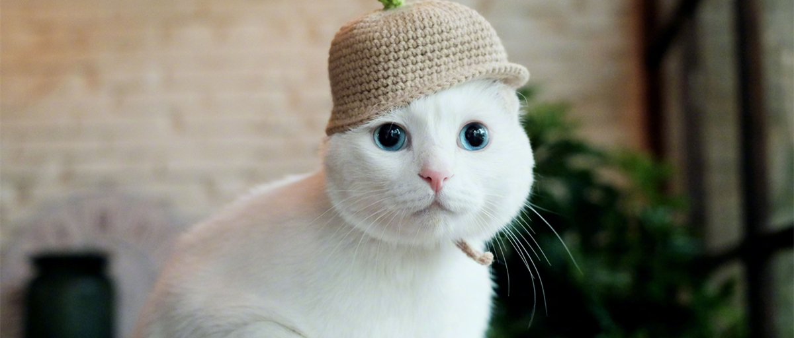
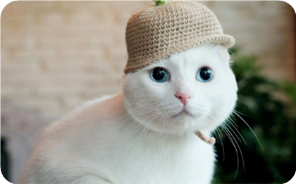

喵窝.


蓝眼大白猫——酥饼
每天早上10点，位于上海市虹口区的罐头场文化办公室，饼干上班的第一件事，就是找到那只蓝眼大白猫——酥饼，用手机给它拍一支几十秒的小视频，发一条“微博故事”。酥饼就是《日食记》里常常出镜的那只网红猫咪，在微博上，它还是拥有404万粉丝的宠物大V“酥饼大人”，而作为账号运营者，饼干每天打开微博都能收到上百条给酥饼的留言，除了评论，还有催更。
2013年6月，上海的一个炎热的中午，只有两个月大的酥饼大人，在一只花坛边的纸箱子里迷茫地过着流浪生活。正好姜老刀从酥饼大人身边经过，他蹲下来看酥饼大人，试图摸摸它，而这只可怜巴巴的白色小猫便顺着他的手爬到他的肩膀，于是他就抱着酥饼大人回家了。因为叫声酥，脸像饼，就有了酥饼这一名字。被酥饼大人称作”一号两脚兽“的姜老刀的家中已经有了一只猫和一只狗，地方不够酥饼大人玩儿，所以把它带去了他的工作室，还聘请酥饼大人当了压寨CEO。酥饼大人看到工作室有阔气的客户或合作伙伴，它都会很淡定地去黏人家，越来越有CEO的范儿！